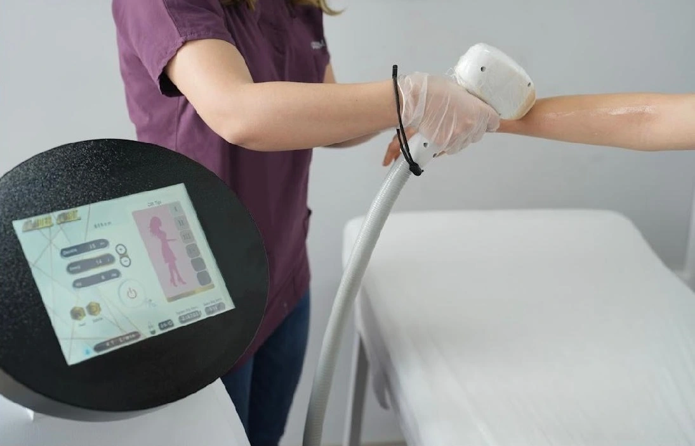
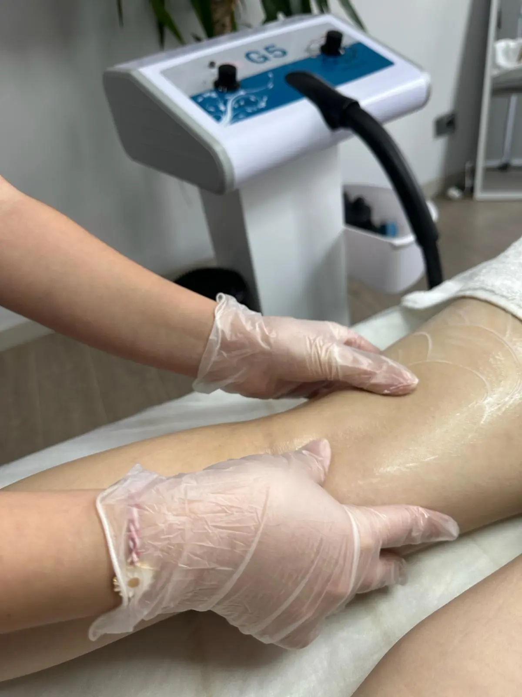
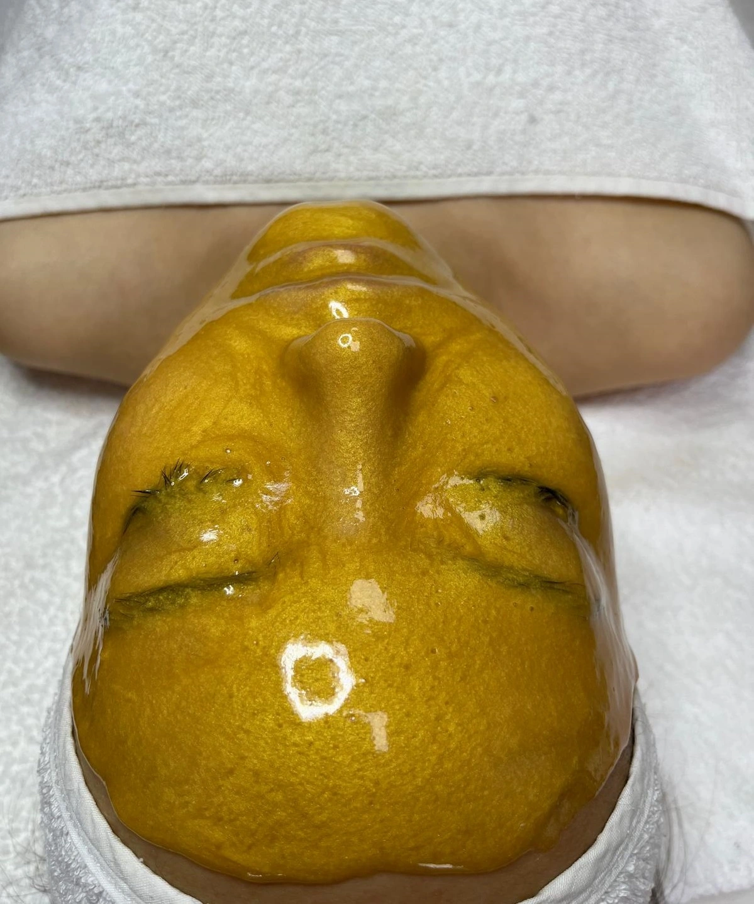
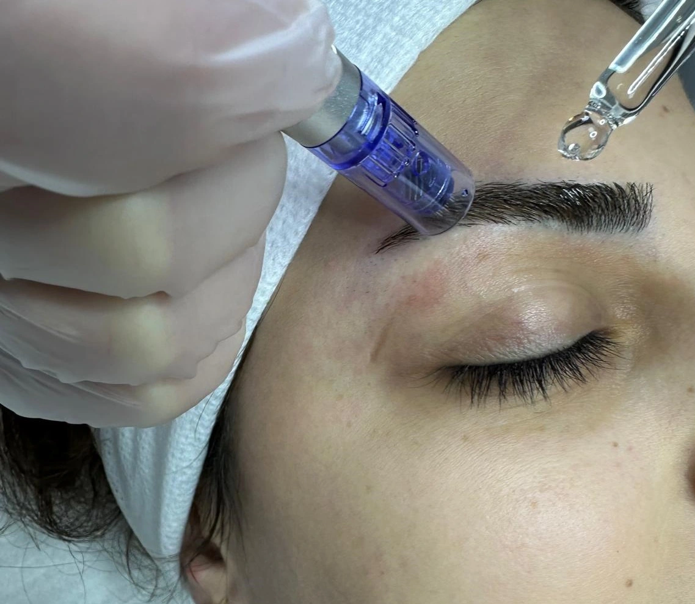
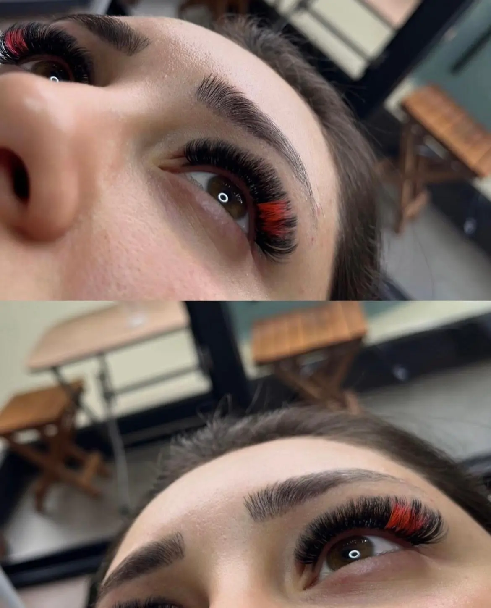

LAZER EPİLASYON
Merkezimizde, en son teknolojiye sahip lazer epilasyon cihazlarını kullanarak istenmeyen tüylerden kalıcı olarak kurtulmanızı sağlıyoruz. Bu cihazlar, kıl köklerini derinlemesine tahrip ederek tüylerin yeniden çıkmasını önler ve cildinizde pürüzsüz bir görünüm elde etmenizi mümkün kılar. Lazer epilasyon işlemi, güvenli ve etkili bir şekilde uygulanarak uzun vadeli sonuçlar sunar. Cilt tipinize ve tüy yapınıza uygun olarak belirlenen seanslarla, zaman içinde istenmeyen tüylerden kurtulabilirsiniz.
+250 Değerlendirme
G5 MASAJI
G5 Masajı ile vücudun anatomisine uygun yapılan ritmik hareketlerle o bölgede yağ yakımını hızlandırır metabolizmayı hızlandırıp ödem atar ve selülit görünümünü azaltır yapılan bölgeyi sıkılaştırarak incelme sağlanır
+270 Değerlendirme
CİLT BAKIMLARI
Yapılan cilt analizi sonucunda cilt yapınız detaylı bir şekilde belirlenir ve cildinizin özel ihtiyaçlarına göre kişiselleştirilmiş bakım programları oluşturulur. Bu analiz, cildinizin genel sağlığını, yaşlanma belirtilerini, nem seviyesini ve diğer önemli faktörleri değerlendirir. Oluşturulan bakım programları, cildinizin ihtiyaçlarına uygun olarak, temizleme, nemlendirme, besleme ve onarıma yönelik adımlar içerir. Düzenli takip ve uygulama ile, cildinizde belirgin iyileşmeler ve güzelleşmeler gözlemlenir; cildiniz daha sağlıklı, parlak ve pürüzsüz bir görünüm kazanır. Merkezimiz, cilt bakımında hassasiyet ve detaycılığa büyük önem vererek, sizlere kapsamlı ve kişiselleştirilmiş programlar sunar. Uzman ekibimiz, cilt tipiniz ve ihtiyaçlarınız doğrultusunda en etkili çözümleri sunarak, estetik ve sağlık açısından tatmin edici sonuçlar elde etmenizi sağlar.
Cilt Bakımlarımız :
+300 Değerlendirme
PROTEZ TIRNAK VE EL BAKIMI

Güzel ve sağlıklı görünen tırnaklar, kişisel bakımın önemli bir parçasıdır. Estetik ve bakımlı tırnaklarla hem dış görünüşünüzü güzelleştirir hem de enerjinizi ve özgüveninizi artırırsınız. Merkezimizdeki protez tırnak uygulamaları, doğal tırnaklarınıza zarar vermeden güçlü ve zarif bir görünüm sağlar. Tırnak bakımımızla, tırnaklarınızın sağlığını koruyarak estetik açıdan tatmin edici sonuçlar elde edersiniz. Renk, şekil ve uzunluk tercihinize göre özelleştirilen protez tırnaklarınızla modaya uygun bir görünüm yakalayabilirsiniz.
+150 Değerlendirme
KAŞ ALIMI
Yüzün T bölgesine uygun ve altın oran ölçülerle ifadeyi tasarlayarak kaş alımı yapılır herhangi yanlış yapılan kaş alımı vs durumlarda Kaş dökülür ve azalır kaşı yoğunlaştırarak olan kaşı koruyup gerekli vitamin verilerek kaş vitaminiyle desteklenir
+250 Değerlendirme
İPEK KİRPİK
Bakışlarınızın etkisini artırmak ve kirpiklerinizin yoğunluğunu belirlemek artık sizin elinizde. İpek kirpik uygulamamız ile doğal ve dolgun kirpiklere sahip olabilir, gözlerinizin güzelliğini ön plana çıkarabilirsiniz.
+200 Değerlendirme